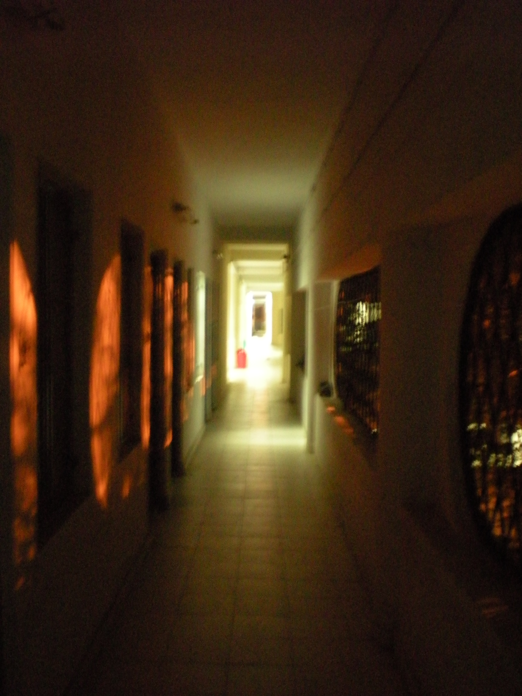
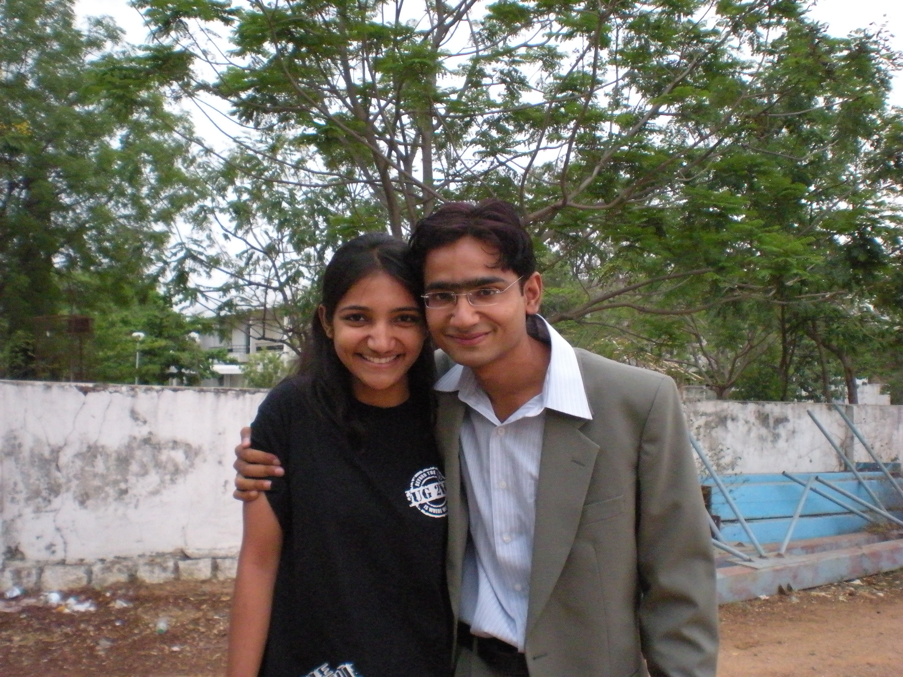

The Yearbook - Commemorating 2005-09!
Aniket Sharma's profile information
Name - Aniket SharmaBirthday - 18-01-1986
Email - aniket.tdsh@gmail.com
Address - D-3, MD Colony, Nakamadar, Ajmer, Raj
Phone - 0145-2670269
Webpage - Link
Hobbies - Writing, reading, trekking, running, BCing
WishList - Win at least one city Marathon, author at least one book, climb one of the ten tallest peaks.
Memorabilia - Lifting the overall sports shield, writing the Fraudbtech blog during placements
What would you want to be remembered as - I wish you would preserve me as I am now.
Future Plans - Trekking all over Arunachal Pradesh on foot and later making a book out of it.
Testimonials written by Aniket Sharma
Aniket Sharma's Album

The gang

Always as beautiful as this... OUR WING!

Me and my darling sis
Testimonials
Prateek G V wrote-I didnt know much about him until Felicity. From the bits and pieces collected from common set of people whom we know, I came to know that he drinks and smokes a lot. Then came Felicity, when things really changed. It was Day 1 Felicity and I had assigned him some work as he was a part of hospitality club and I had an event to organize. My personal opinion about him during those days was - this guy talks a lot and didnt work. And the same thing happened, he didnt finish the work assigned to him but there was a reason. I was really annoyed and didnt bother to know the reason. I even remember what I had told him in the phone "Dude, If you cannot do work, why do you take up responsibilities?". I am really sorry for what I had done. In fact the entire day and even night, he was taking care of a bunch of jacka**' from the Indian Ocean band. (Long story, ask Adi to narrate the story on why Indian Ocean is a bunch of jacka**'). Day 3 I met him again and thats when he narrated me the series of incidents that happened and I wish I had said sorry that day for what I had done. The patch up part will be the most memorable moment for me during Felicity when you drew Indian map on the ground, divided it as north and andhra and finally rubbed the line of demarcation.


Then came holidays and that was the first time I came across his blog. It was a post about your trip to Himachal Pradesh. The way he wrote that post left me completely mesmerized. He takes his readers to some different kind of world (Utopian) .I always said him wish I could write like you some day. I hope some day you write a book and I promise I will be there in the queue like many others who love your style of writing, waiting for you to sign on the copy of your book. Its been a great experience knowing you, reading your posts and doing BC with you.

Tag : Sports, Social Activities, BC, IIIT Mag, Felicity, Marathon, Blog
Abhinav Parashar wrote-
Apne Tullu bhai ...aka mastRam.
A dedicated BCbaaz.... kitna bolta hai be
 ....
....
Bhai ke sath BC marne me bada maza aata hai. Kota ke kisse or na jane kaha kaha ke. A good writer and a good speaker. A good musician.
Never said no ...whenever found him on the way to coffee shop.

Hats off to u for ur never say no attitude
 .
.
Jo dil me aata hai kar deta hai. An adventurous.
Believes in living his life with full of fun.
Bhai time kam hai ...yearbook band hone wali hai ...to testi ka samapan yahi karte hain.

Wish a great future ahead. Keep in touch.
Manish Sharma wrote-
Banda dil ka ek dum saaf hai..
jo dil mein hota hai bol deta hai .. maar bhi raha hota hai to bata deta hai ... "Bete, main teri maarne ke liye keh raha hun ... teri taarif nahin kar raha hun yahan
... "Bete, main teri maarne ke liye keh raha hun ... teri taarif nahin kar raha hun yahan " .. I like his FRANK character..
" .. I like his FRANK character..
Banda humesha nayi poems likhta rehta hai ... mostly in hindi .. jitni iski english shudh hai .. utni hi iski hindi ..
I really like some of his poems ..
and I hope he continues to write more ..

Even we use to discuss on writing articles and poems ..
What actually is required when someone is writing any of them..
According to him,
"First a signal comes to your mind.. it may be in the form of a picture .. and now it depends on you that how you perceive it and how you portray it"
I have learned a lot from our discussions..
Wish you a great future ahead.
Stay in touch.
CHEERS!!
Srirang Ranjalkar wrote-
Aniket aka Tullu Sharma aka mastram.
I met this guy during our first Agni meet. He was very enthusiastic about the skit and dance and songs and all. But in the end we ended up doing the most cliched skit of Sholay. Aur usme bhi gadbad kar dii. But that was a sweet memory that I'll carry with me forever.
He's a nice singer and sings with all his emotions in his voice. Well I like that man. You completely see yourself in the position of the protagonist while singing and get completely involved. Awesome!!
Well, coming to the more important points. He's also very active in sports and is a great athlete. I never took part in any of the sports activities in general, but I used to go out with him for jogging and then I came to know that he's such a great adventure freak. He can go to any extent as long as something is adventurous.
He was once a very heavy drinker and had shared his drink with guys from almost everybatch that we've seen in IIIT.
A big BCbaaz. Kisi bhi cheez par BC kar sakta hai. Kisi bhi arbit cheez par. Bahut achi achi kavitayien bhi likhta hain. Ekdum dil se.
But sabse main to iska blog writing style hai.
Dude, your analysis of Ug2k5 as a batch in the post was something unforgettable. It was the best post I've ever ever read in my life and 65+ comments on that post is a testimony for that fact. The Samvedna and scribe wala post bhi awesome tha. Without my knowledge I felt that suddenly a teardrop was rolling in the corner of my eye.
to your blogging talent man! Seriously!!
Aise he awesome kaam karte rehna. Aise hi adventures karte rehna. Mujhe kabhi na bhulana.
Love
DJ Ranga.
Prashasti Gupta wrote-
Our conversations were restricted to a casual hi and sometime not even dat...though we used to talk at the college beginning...
But two things which I like about him is his writing skills
and his stamina in sports...
well we were house captions of rival houses but never actually got into any fight
...
The work he is doing for Samvedna is also commendable...he has written some of the nicest posts I have read...
He is quite an open minded individual
...and has his unique ways
And he left smoking ...
All the best for ur future
Good luck
Chakrapani wrote-
Aniket...My fellow agnian,my co competetor and my wing mate too..
He is a very nice guy and always there with me during all the competitions giving me mental strength..
He as an athlet and house captain worked very hard,in fact very very very hard..to take our house to victory..i never saw any agni house captain working so hard for the sake of house
wherever there is any competitions..there is one guy coming straight to my room and asking me to come for practice..thank you for everything man!!
Have a great life ahead!!!
wish you all good luck..
chakri..
Deepti wrote-
Yes, we were in the same house and yes, we have had a chance to interact and become friends but no, we did not. For the first three years, I do not remember having a proper conversation with him. Blogging for one and Samvedana is really how I got a chance to know him better. Here, I must admit I was slightly shocked when he initially started showing genuine interest in Samvedana. Never really expected him to become a part of Samvedana but now I claim that I am proud to have him in our team. He is passionate about few things - his writing and Samvedana which I know are very important to him. He undoubtedly is the best blogger of our batch. Writing is all about getting the emotions in your head eloquently and Aniket is gifted in doing that and I bow to thee. Another thing which I very much admire in him is his candidness which can be evidently seen in his blog.
Best memories that I share with you would be the mango eating session in yuktahaar, the hariharan concert, the funny photoshoot we had for some magazine. Not to forget the shayari thing we attended, where only you were genuinely interested in what that fellow was saying and I, in my usual way, was making fun of literally everything over there, irritating you and Prateek
. Prateek and Sashi actually took my away from that place, well, because I was disturbing every person sitting over there
It was fun knowing you, even though it was at the fag end of the year, I am glad that we have become good friends. Thanks to Samvedana, we will always be in touch and will work together.
Wishing you truck loads of best wishes and keep up the same passion you share for few things in your life
Randeep Singh Banga wrote-
tullu bhai ke baare mein kya kahein...mast maula hain poore...jo mann me aaye wahi karenge...waise karna bhi wahi chahiye...
dis guy has guts...he can go to extremes...smtimes u'l call him mad for his acts like insisting u to stand below a tree & be ready to cath him in case he falls down while climbing a tree
 or be it climbing up to d 7th floor of d new IIIT building at a very fast pace & tht too 4m d round stairs
or be it climbing up to d 7th floor of d new IIIT building at a very fast pace & tht too 4m d round stairs  ...likes to go on long walks specially on rocks...a true admirer of nature...very much aware of d social problems around & recently i've seen him get involved in Samvedana's activities wid gr8 dedication...
...likes to go on long walks specially on rocks...a true admirer of nature...very much aware of d social problems around & recently i've seen him get involved in Samvedana's activities wid gr8 dedication...
tullu bhai i'l forever remember ur interview wid Priya Kameshwari
...kya poem sunayi thi yaar tune...senti kar diya tha use ...
wish u all d best in life and keep n touch
Aditya Agrawal wrote-
PART 1
Aniket was the first person whom I met at IIIT-H while standing at a long queue near BLN's office. We had a lot of interaction in the initial weeks. He had an opinion on everything. He was particularly well-informed and could speak and write well.
We have a lot of common interests and qualities - a passion to understand and analyze politics and music, long-distance running, love for beer and spirits, etc.
He is one of the few chaps I have seen who has good friends across the batches. His prowess in talking to anyone whatsoever for any amount of time, gets him a lot of buddies. Always resilient and high in spirits - Main Jindaa Hoon anecdote
is a testimony to these qualities. Coupled with the infinite stamina he has, he can run endlessly. He also has a penchant to explore new places. He won't ever hesitate to entertain you with some of his skills - guitars and singing. Also, he is more careless and forgetful than me. Unbelievable, huh!
In spite of all these unique qualities, there are other reasons which make him a little annoying at times. Ability to talk at lengths is certainly a nice personality trait. But doing so without caring for the audience draws flak. Also, he has a peculiar view of things and hailing his views as the only correct ones is not particularly welcome.
However, we have shared quite a many incidents/anecdotes between us in our course of four years - which makes our friendship special.
Memories
Remember the visit to Araku valley on the batch trip. While most of the junta could not find anything worthwhile to do there, Aniket and I had this idea of trekking the steepest visible peak. The thrill of trekking and the satisfaction of reaching the hill-top were followed by a royal scolding from the big brother Chand and other organizers.
Aditya Agrawal wrote-
PART 2
In the 5th sem, we took the task of organizing the IIIT foundation day - two lazy fellows teaming up together for organizing an event was bound to result in a screwup
- the faculty could not get our invitation email and we had to bring Prof. PRK Rao to IIIT on an auto while it was raining. (Dr. Zulu would have killed us had he came to know that)
Come Felicity 08 and we had to face the ire of some of the meanest guys on Earth - Indian Ocean. That was indeed a very long day for both of us - leaving IIIT at 11 AM for the airport and coming back at 5AM on the next day. I won't forget the kind of relief we got when those fuckers left from the airport. However, we got a small reward for all the trauma - a full bottle of Smirnoff which we relished on the third day.
Something I will never forget is the 1500m and 800m races on the 3rd year sports day. 1st day in 1500, I was leading till the last lap of 200m and he passed me, swearing at me in the process. I was disappointed that I could not fight more closely. Come the next day morning, the 800m race, I was mentally set to not let him pass this time. And I held to that despite his charges till the last 50m and conceded. Though I lost, I had at least given him a challenge this time. : )
Some other memorable incidents are taking grass at Himank's room, and recently volunteering at Elections.
Wish you the best dude. Stay in high spirits!
Maruti Borker wrote-
First year mein mera floor mate ta
... I interacted with him at that time .. he has changed a lot from then ( all +Ve ) .. but BC to abhi bi band nahin ki ..
He used to tell stories about kota and his gaon and how he had done some awesome things with his friends
... ye aur ranjeet milkar Ojasvi ki kaafi mari ti ...
A fellow blogger, his poems are beyond my understanding ( sab kuch OTH hota hai
). But ye jab posts likhta hai to nobody can beat him ... one classic example can be the story he wrote in his blog and another one can be the one he wrote for samvedana.
His determination for sports helped him get rid of his smoking habit
..Ek time pe he had this thing of playing guitar... one confession to make I really didn't understand what you used to play with your guitar in second year... ..
All in all he is mastram
... BOA mein bi mast rahio
Njoy and Warm wishes for your future
Saurav Khurana wrote-
one of first interactions with him date to when he was the room mate of bharat...well then he used to exhaust all the matchsticks for lighting his cigarettes..which bharat used for lighting incense sticks
....
come felicity-06 and we were managing dominos stall together for day-1...later interactions wid him were in the mess where he used to narrate his acts of daredevilry while he prepared for JEE
den we were CAT buddies and it was always insightful to discuss wid him the preparation stuff....
he has been eating in yuktahar dese days.....nd dats where most of our interaction happens....where his favourite passtime is shikha ya mux ki lena
...apart from savouring a plateful of salad......it is smtimes funny to see the way he loughs ...
well I distinctly remember one incident in january dis yr wen we were headed to give mock XAT...which we finally cudn't appear for mostly because of wrong judgement on my part
 ....i must admit that this lanky figure has patience and deals with situations in the most pragmatic manner ....
....i must admit that this lanky figure has patience and deals with situations in the most pragmatic manner ....
gud luk
Amit wrote-
Continued...
Lots of moments are there of my interaction with you.
Cann't pin point all be it on NBH breakfast table, or on road, in wings, in my room in first year, in class where we sit together etc.
One thing I like is when u laugh,u laugh in a strange way and I can always laugh by seeing u laughing don't mind dude but my laugh
is not the normal one too...
. One more thing I would like to point out is ur jeans that u didn't washed for months.
During CAT preparation ur English always inspired me and would like to thank you for the suggestions you gave me.
Overall you are a very nice guy,I like the way you discuss things and let we be friends forever dude...
Amit wrote-
Aniket:
Aniket ko dekhtein hi ek hi cheez hamesha dimaag mein aati hai mere and i.e. discussions and confidence. These two words are epitome of a guy who is our Aniket. I could have said he is BC bazz but his BC is more of a discussion and contains kind of formalism.So we should rather say he discusses things than
he do BC.Though he do BC too but he is heavy on formar one.He is with me right from Ajmer, where we
studied for JEE. Once I saw him smoking outside the insititute,he was the first friend of mine whom
I saw smoking,I was shocked that time but after that it was chalta-hai type situation for me.
I always see him speaking sth new or sth strange or some incident etc... he always has lot of things in his bag to tell about.
One of the astonishing one was when he told me sth about drinking urine ( won't tell much here,I don't remember
fully too..
). Next comes a girl from our institute. Its very hard to tell you dude that whatever you thought about what
she thought of you is wrong...
, since I know her better.. but its still debatable,you can put your point...
Though we both should have been in same batch but we were in the different batch but that didn't matter much and our interaction
continued with me alternating between two batches. Then in college, my gosh, he came out from no where
and carved a niche in everyone's heart. He is very good in discussing issues. So what's the big deal here??
Deal is his patience and the fact that he is a great listner,he listen to everyone with great care and then put
his points. He don't let anyone feel uncomfortable in his company except in some cases when I too became the victim once.
In the NBH mess table,with some confusion he started railing against me and was like he don't want to listen to me.
This was the first time I saw hyper Aniket. You talk against India or Indian culture or anything like that chances are there
( not always necessary) that its time for him to go hyper...
. Dharmeet Singh wrote-
Not interacted much but really admire him for always writing truth and deep from within.
Baki aage saath mein kaam karna hai to aur pata lagta jayega
G. Rohit Bharadwaj wrote-
Aniket,
Interacted with him since meetings for felicity have started and now in Samvedana, I must say he is one of those guys who can travel inside oneself with such an ease that he speaks his heart out on any given situation. His passion towards any work which he does is great and you can actually feel the aura of his dedication.
kudos bro, be the same...
all the very best for your future,
stay in touch,
cheers,
rohit
Himank Sharma wrote-
Aniket aka Tullu aka Sutta aka Mastram
He is definitely the most unique banda in the batch, I dont think i will ever meet any guy like him ever in my life. Matlab banda alag hi hai yaar, kuch bhi karta hai. Talking about the guy, he will be among the top BCbaazs of the college, har random , arbit bande se BC kar sakta hai. A writer par excellence, a big fan of the stories he writes, just too good
. The greatest thing about the guy is the passion he has which is visble in whatever he does Few incidents which I can remember are the bloggers' meet, then feathers, the poetry reading session he organised. Cheers to you for having this spirit man.
His ability to do BC is infinite, he can do bC all day, all night with each and every person. I don't remember ever going to his wing for BC and yet he would always come to our wing for BC, the range of topics on which he can talk is quite wide, he can do bc on almost everything ranging from music, literature, philosophy, history, mythology, college life... almost everything. And yet he never gets tired of doing BC, others at time start getting bored but he can keep on going.
A fellow blogger, he is also one of the people, who like me are worried about the dying blogging culture in IIIT. We tried to do our bit to encourage more bloggers but we failed miserably. He has my partner a lot of times doing "You know what
". I will always remember the monologue he gave about getting high on everything, supposedly he can get high on eating ghee, climbing, walking, running, basically there is nothing in the world which doesnt make him high
Gotta lot of things to write but running short of time
May be some day
All the best for your future and keep writing and enjoying your life.
Most memorable moment : The law we devised this year Felicity rock night
Cheers!! Keep rocking..
Vipul Mittal wrote-
Tullu Ram, my Ajmeri brother, the biggest BCbaaz of the college. You can always find him BCing somewhere in the college. Be it mess, class, lab or hostel he is always doing some random and arbit BC. One of the best bloggers. His stories are just too good and always fun to read. Quite a good poet though I never understood his poems. English guru becoz instead of studying ABC, he studies ZABC (as stated by Maroo
).
I met him on the first day of college where he ws roaming with his father. Though we studied at the same coaching institute, we never met each other there. Earlier he was Raman's roommate but due to "some" issues Raman later shifted to my room. Used to smoke a lot but I'm quite happy to see that he has quit it now.
Once he is drunk, he becomes a real pain in the ass. How hard you try to send him to his room, he will never stop giving his ideas on arbit issues. I remember the recent Felicity's last night when he was not in his conscious and he came to my room. He taught me so many of his fundes.
How can one forget his trekking and running passion. A good athelete. You can easily award him "The Tarzan" of our batch. Never into studies though he god placed in BOA. Good job there bro. There must be a very few incidents during our 4 years of college life where he not involved. You name a kaand, and he must be among the first ones involved in that. How can one forget the "Farewell" one last year
.
But all in all a very good person. Pure at heart and never takes anything seriously. Very helpful and friendly to its core. No matter waht people say about you, you are very good and be the same as you are except the BC thing. Thodi to kam kiya kar yaar, itni energy aati kahan se hai tujhmein.
God Bless you. Good luck
Ankit Saraswat wrote-
Part 2
All good qualities aside, he is a very sloppy person. It is because of his careless attitude he has been into trouble many a times. He has still not learned a thing and sleeps with his dorm room wide open. He is not too popular with the hostel administration and even the faculty. But many a times he just got the short end of the stick. I still remember that day when Prof. Govindrajulu called you a doper in front of the entire class. He is not a bad student; in fact he is a very good student and has spent many hours in library studying. Now days he is totally devoted to Cognitive sciences and Usability Engineering.
He is one of the best BCbaaz around. He is the only person with whom I can talk about anything sports, politics and even philosophy. I dread going mess with him because he takes 5 minutes to finish one single chapatti. He loves chicken and has explored almost all the food joints in Hyderabad that serve chicken.
He has touched the lives of every person in our batch in one way or another. I truly admire you for your enthusiasm and commitment. You were able to quit smoking while I am still stuck after many unsuccessful attempts. I miss our walks to HCU and would like to do it again in the remaining few days. I am glad I had the opportunity to be in the same batch as you. I cannot even imagine college without you and hope that we will always be friends. Be the same fun loving, jolly person forever.
21.04.09
Ankit Saraswat wrote-
Part 1
Aniket Sharma
Aka Tullu aka MastRam aka Sutta
Tullu is one of the most unique people I have met in my entire life and believe me I am not exaggerating. We share many things in common, right from the letters in our names to many of our interests. Back in first year he was the only guy I knew who smoked. I shared my first sutta in college with him (actually we didn't share it, I borrowed it from him) and also my first beer in college. There are too many memories associated with him to jot down here.
One of his nicks 'sutta' given to him by the seniors aptly describes his physical appearance, long and slender. But don't go by his appearance because behind that weak and fragile body of his is a powerhouse of energy. If you don't believe me ask the person who started bleeding in just one single punch. He has channeled his energy into organizing felicity '07 and '08, college magazine, Feathers, and various other cultural activities. He is one of the best long distance runners in IIIT and has run many marathons. He is also a good footballer. It was under his captaincy that Agni house lifted the overall sports shield.
Any discussion about him is incomplete without mentioning his command over the English and Hindi literature. He writes one of the best blogs. His stories and poems are a joy to read. He is an artist at soul searching for means to express it. He used to play guitar in the first year (he even taught me to play guitar), started blogging in the second year and now is into poetry and photography. He is also an avid reader and you can find his room full of books, right from Archies, P.G. Wodehouse to Harper Lee. Sometimes I feel he is in the wrong field. He could have achieved great heights in literature.
He is not just a person with good literary sense, he is also an adventurer. He loves trekking and exploring new places. We used to go to HCU late in the night. He is familiar with every nook and corner of the college, even the inaccessible jungles.
contd.
Abhishek Sainani wrote-
I didn't want to add this but its important. I admire him for giving up smoking when he realized that it was causing him difficulty while running.
I like his hindi poems, some of them are delightful, others are quite an insight. Also, few of his blogposts and his stories are heart touching and quite a masterpiece as far as the conception of the idea is concerned.
What I would like to take from him is his open minded outlook towards life and to do jo dil kahe!
All the best for future, I'm sure it'd be much better, although not the same as these college days!
Abhishek Sainani wrote-
Part I:
Being in the same house, I got to interact with Aniket in my first week in college. After the freshers, I didn't get any specific occasion to interact with him because our paths never met. Moreover, he had completely different group of friends. It is quite surprising that I got to interact with him this year and I am quite pleased with it!!
Its fun chatting with him about world affairs or arts, poetry in particular.
He does have an opinion about everything and is a good speaker. His speaking skills has helped me at times, especially in some courses we took together (read usability engg.).
When we had to give a presentation, he started speaking and I didn't interrupt but let him speak.
It is from last sem when we took cognitive science project together that we have had some good time together and I have got a chance to understand him better as a person and shun his previous image in my mind, and also I got some
answers to my speculations about him.
In second year he visited my room many times for guitar practice sessions with Atul, which irritated me a lot (partly because of jealousy), and hence his first impressions on my mind was not good. Later I realized that he was quite
passionate about whatever he did, be it guitar strumming, or running a marathon, or refining the art of poetry. Now a days we share our interest and have had few interesting sessions, once reading english poetry online for few hours and once reading hindi poetry.
Although he gets a bit lazy at times, he's a great person and a great friend.
I really am grateful to him for organizing IIIT poetry reading session, Feathers in which I and many other amateur poets got a chance to share their work. He is one of the few people I show my poems as he gives me very valuable feedback on my work.
Rajat Narang wrote-
Part 2
While one talks about him being careless and weird, it is easy to forget all the good qualities that come with Aniket. He is among the most innovative and enthusiastic guys around, has remained completely dedicated to his house and college for most part of these four years, is one of the best athletes in college, maintains one of the best blogs in college, and most important of them all, he is a true friend. He is one of the few people I can always count on in times of need.
When it comes to studies, he is one of the more intelligent guys around. His command in the verbal section in the mock CATs was simply exemplary. As far as the acads in college are concerned, after screwing every mid-sem examination, he starts visiting the college library regularly. However, he never pursues this interest for long and the same story continues over the next mid sems. Of late, he has been deeply involved in subjects such as cognitive science, some usability crap etc...
In the end, I just want to tell you that I'll always cherish our friendship and all the great moments we have spent together. Never change, never stop
Things I will never forget: Tullu walking into the wing, hand on his chin, puzzled, and in deep thoughts; his peculiar style of laughing; his love for chicken
18th April 2009
Rajat Narang wrote-
Part 1
Well, as I go about the task of putting my feelings and experiences over the past four years into words, I could not have found anyone better than Aniket aka TULLU to start with. And as I recollect our early days in college, I see myself entering senior Bhaggo's room in a state of confusion and fear of being ragged, only to find an extremely thin, almost skeletal figure, smiling nonchalantly while smoking a sutta right in front of the seniors. It had to be him; it had to be Aniket Sharma.
Together, we were ragged on numerous occasions. I am probably the only one in our batch who completely knows the aptness of one of his nicks, 'Mast Ram'. Some of his stories were absolutely hilarious .
First semester was a time when Aniket and I became the best of friends. Since than, I have enjoyed each and every moment on offer. I completely remember all the chicken we had together, the way he convinced us(Ranjeet and I) into crossing the 'then' IIIT jungle at 2 in the night, the night before the DLD end-sem exam, and his resolution to quit smoking. There are just too many memories that I can associate with him. Hence, I will go no further in recollecting the past.
Aniket Sharma is one of the most careless, weirdest, and distinct characters to have lived on this planet. His level of complexity goes unparalleled. Yeah, and I mean unparalleled. If I have to rate him and Mr. Garimella Ramamurthy on the scale of complexity, I would definitely rate him a notch higher than the most loved professor in IIIT....Sorry guys
. He is among the fastest runners in college, but when it comes to walking, he can easily give a snail a run for its money. One of the most responsible guys during Felicity'07 and '08, he can be totally irresponsible when it comes to day-to-day things in life, the famous daaru kaand, for instance. His inconsistent behaviour has often led to endless bakar in our wing.Karan wrote-
Part 2
It was sad that most of his close friends left last year, but in many ways, this year has been the time when Tullu has come of age. His influence percolating the entire batch, hes been the 'hawa ka jhonka' in every wing.. The biggest BCbaaz of the batch.. He has made friends across groups and sections, something which is very admirable.
Once incident which will stay with me. Some of us were sloshed and the topic came to Aniket. Somebody asked, "How come this chap is such a bond when it comes to lit?" . My reply was (I had more than the normal amount of alcohol in my blood), "Abe, He did not learn ABC. He started with ZABC"
In more ways than one, this profile pic of Aniket is what he is.
Cheers mate!
Person he resembles: Vijay Raj (Now dont kick me for this.. Public demand!
)
City you resemble: Kolkata. Just go there man!
Fav memory: Seeing your smile when someone calls you mastram
Message for him: Abe, thodi to BC kam kar!
Peace.
Karan wrote-
Part 1
Sometimes, when I think of Aniket, it seems as if he is poetry in motion - a wave of tidings and musings flowing by. At other times, he is this languid and pensive little chap who is lost in his utopian world. For Aniket will not follow the stereotype - he is a bit of an idealist in a lot of matters. For example, I remember our recent discussion on reality shows. He was of the opinion that adventure is a pure form which should not be politicized, whereas I did not agree. There come our various tones of discords on issues, but to our credit, we've been able to brush it aside and not affect our relationship.
Which is how it should be. And yeah, because of it, I sometimes enjoy debating and having a chat with him. Not always though.
An artist in its purest form, Aniket has an amazingly intriguing style of writing. Everyone knows that his blog is the best when it comes to content. Meanwhile, some of the poetry in the college irritates him, and its not hard to see why. When I look at it, he is a bit of a romantic, and loves spreading so in the ambience around him. His initiatives in this field in the college have been commendable.
His desire to do things for the college, has well, seen him do a lot of 'things'
. Brilliant during Felicity '07 and '08, he was at the forefront of nascent ideas. Hes done a lot of other stuff.. organizing various events, the mag. In all these spheres, he is his usual self, laidback and sanguine. I think he needs to be more proactive in critical moments. But well, take a bow for the selfless work you've done . But yeah, he also has this unfortunate knack of getting into trouble more often than not. Disco, scuffle, guards, booze.. We've been in a lot of it together
(continued..)
Arun M.S.C wrote-
good runner.. keep running.. all the best for your future runs.. have a great future ahead..
Namrata Suri wrote-
Ok so this is definitely unexpected
. I am glad I beat you at this . Most people know how we used to fight in the first and second year and that was partly because of how immature I was and partly because of well .. you . On a more serious note, I regret all those misunderstandings and fights and as much as I wish
I could take 'em back, I can't. But our conversations have hopefully sorted it all out
.
He is an awesome writer and his blog is one of the most well written ones around. Has been a great Agni team-player be it sports or cultural activities. Has won many accolades for our house and has always motivated and encouraged juniors to perform well for the house.
Is very mature and understanding and am sorry if I ever hurt you because of my blunt way of speaking. Good luck for all your future plans!!!
Prudhvi Vatala wrote-
this guy aniket is one of the best long distance runners i've seen in iiit
.. you should see him play foot ball.. total commitment .. same levels of it even after he concedes a self goal (just pulling your leg )..
during our first year we were good friends.. we used to talk about the places we came from, sports, politics, everything..
he was a dedicated captain for his house.. he won the house championship for agni, which he and his people totally deserved.. he was the one to break the ice when things were kinda rough between us after 2k7 inter-house
.. really a considerate man.. has loads to talk about anything.. i mean it when i said 'anything'..
all the best for your future pal..
Atul Dwivedi wrote-
Though I'm not a good writer but let me try to explain about my friend Aniket. I met him in Agni house meeting and from the starting itself he was very friendly in nature. He stood as a leader in house activities and participated both in culture and sports events too. He was very enthusiastic about any kind of house activities.
A true BC baaz, BC , BC and more BC. IF you are with him you never get bore except sometime when he gets philosophical
. A true house captain, he always had everything planned before the events start.
How can I forget our first performance dooba dooba rahta hun song. That was amazing feeling. We used to play guitar and sing songs in GHEB, truly my friend those were the best time I had with you. He always kept my enthusiasm alive for guitar and music, even now whenever I see him I feel that I should take guitar and start playing.. sure dude we'll do that again.
He's very moody kind of person, you can't predict about his mood. Isko hill dikha do ye kudana start kar dega
. Remember those time when we were in batch trip and we did hill climbing. maan gaye bhai kya enthu tha..
A great writer not only in Enlighs but in Hindi too. he has written many good poems and stories.
A nice person who sometime get moody but good at heart, very talktive and comfortable with everyone.
Tags: Writer, sport person, Guitarist, BC baaz, full of energy, sutta
Sanket Sharma wrote-
How does time flies?? It seems as if it was all yesterday...
Bhaggo: abey daddu (canteen se chillate hue..) sutte ko kahiyo ki raat mai 1-12 waali wing mai aajaye...
and i was like who sutta???
but now things have changed 'sutta' in person has become a brand...
He is one person in batch whom I always wanted to join me for an adventure but could never happen so far.
But never mind dear we still have years to go.. afterall we are in one company now. bas offer letter aa jaye ek baar
.
I can not imagine the 'bus ka suffer' of our batch trip without you and your guitar, who made the 13 hours drive to vizag unforgettable.
We will rock once again in upcoming trip.
I still remember the seriousness with which you have worked for your house to achieve the Trophy and made it your most memorable day in IIIT.
Be the same dude!!!..
Tags: Trekking, Writer, bcbaaz, nasha, stamina, guitarist...

{kind=link}
{kind=link}